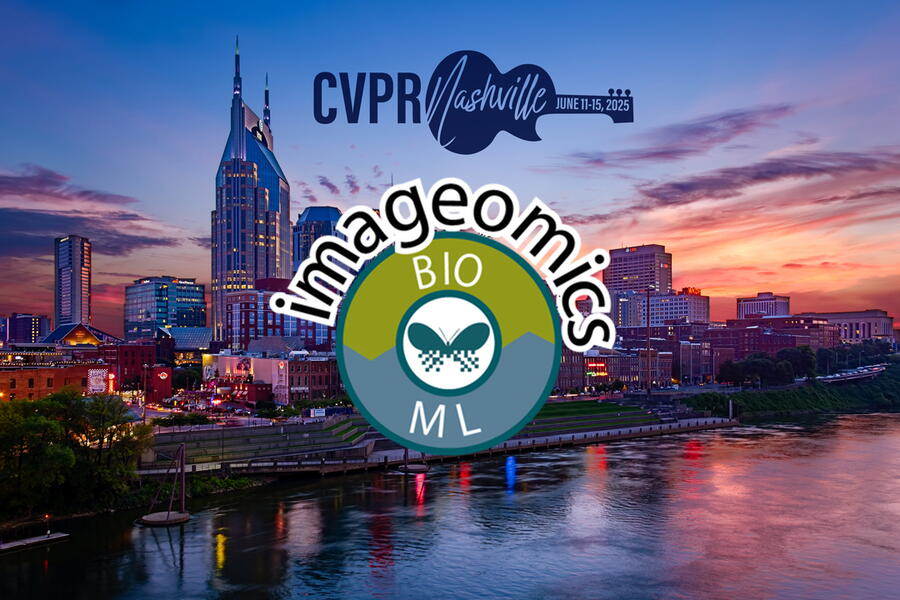
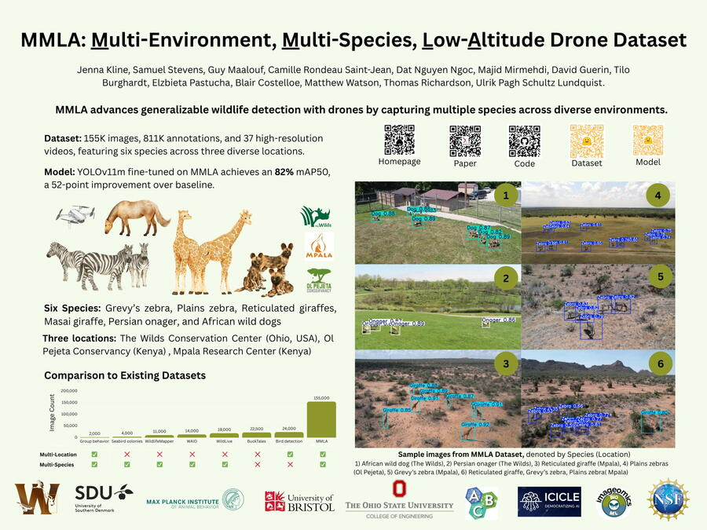
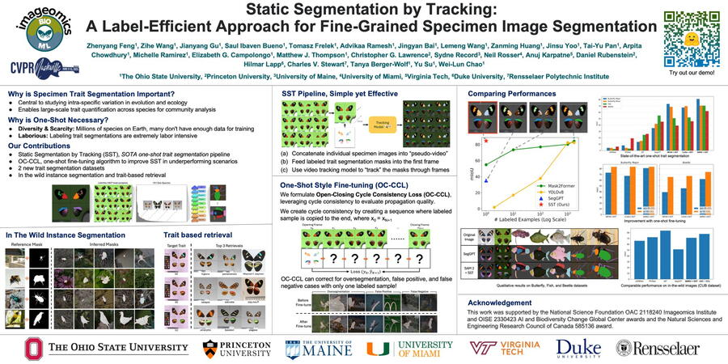
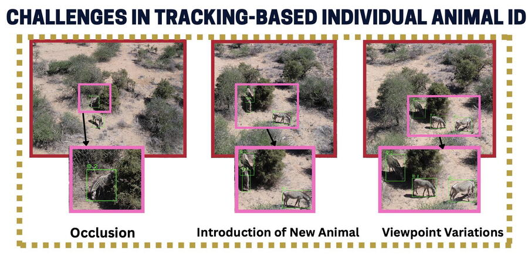

The Imageomics Institute is making a strong showing at the 2025 Conference on Computer Vision and Pattern Recognition (CVPR), one of the world’s leading events in computer vision research. With three accepted papers and multiple workshop presentations, the Institute is helping to shape the future of AI for biodiversity and ecological monitoring.
Among the highlights is the introduction of Fish-Vista, a novel dataset designed to support fine-grained visual categorization of aquatic species. The project tackles key challenges in the #AI4Science space, including small object segmentation and attribute learning from weak labels.

Another major contribution comes from Jenna Kline, a Ph.D. candidate at The Ohio State University, who will present the MMLA Dataset at the CV4Animals Workshop. MMLA, which stands for Multi-Environment, Multi-Species, Low-Altitude Aerial Footage, includes more than 155,000 frames of drone footage from conservation sites in Kenya and the U.S. The dataset supports training of generalizable vision models for real-world wildlife detection, including a fine-tuned YOLO11m model.

Daniel Feng, a postdoctoral researcher at Ohio State, will deliver an oral presentation at the CV4Animals Workshop titled “Static Segmentation by Tracking,” showcasing a label-efficient method for fine-grained specimen segmentation. Feng will also present two posters on interpretable vision transformer models: Prompt-CAM and Finer-CAM.

Ankit Kumar Upadhyay, a Ph.D. student at Rensselaer Polytechnic Institute, brings forward a new framework for Animal Re-Identification via Multiview Spatio-Temporal Track Clustering, accepted at the CV4Animals Workshop. The method addresses tracking and identifying animals across complex video footage, achieving near-perfect accuracy with minimal manual input. Co-authors on the research include Ekaterina Nepovinnykh, S. M. Rayeed, Aidan Westphal, Lawrence Miao, Julian Bain, Jaeseok Kang, Tuomas Eerola, Heikki Kälviäinen, and Charles V. Stewart.
The Imageomics Institute’s participation builds on its 2024 success at CVPR, where members won the Best Student Paper award for BioCLIP, a vision foundation model for species identification. The Institute continues to advance the emerging field of Imageomics—using image data to extract biological meaning and explore evolution and function through AI grounded in scientific knowledge.
Imageomics’ contributions to CVPR 2025 are supported by collaborations with the KGML Lab, NSF ICICLE AI Institute, WildDrone, and other partners across the AI and ecology communities.